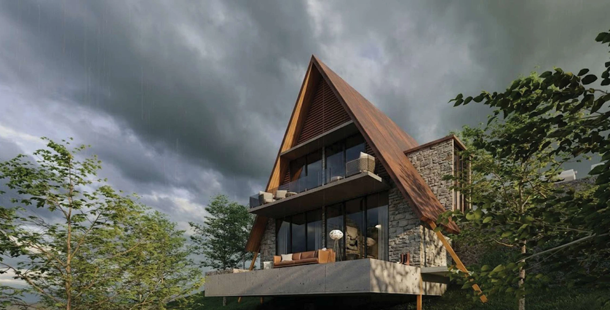

MALAVIKA NAIR / SELECTED WORKS
Architecture.
Interiors.
A sense of place.
From landscape-led architecture to carefully resolved interiors. Selected work across India and the GCC.

01 / PORTFOLIO
Selected work10 projects & studies
Architecture, interiors and the ideas behind them.
02 / PROFILE
Malavika
Nair.
ARCHITECT / CA/2024/175001
From concept
through handover.
Architect with 4.5+ years of experience in architecture and interior fit-out projects across the GCC and India. My work spans commercial, corporate, residential and hospitality spaces.
My technical experience includes construction documentation, IFC drawing packages, consultant coordination and on-site execution.
Experience
DLB GlobalAug 2023–present · Bahrain / KSA / UAE
Evolve Design StudioApr 2022–Jul 2023 · Bengaluru
Architecture internshipsJun 2019–Mar 2020 · Barebase Studio, Attic Studio & Foliage Architects
Education
Bachelor of Architecture2016–2021 · DC School of Architecture & Design, Vagamon
MG University, Kerala
MG University, Kerala
Tools & skills
AutoCAD · SketchUp · Lumion · D5 Render · Adobe Photoshop · Adobe Illustrator · MS Office · Hand drafting & model making
Languages
English · Malayalam · Hindi · Tamil
03 / CONTACT